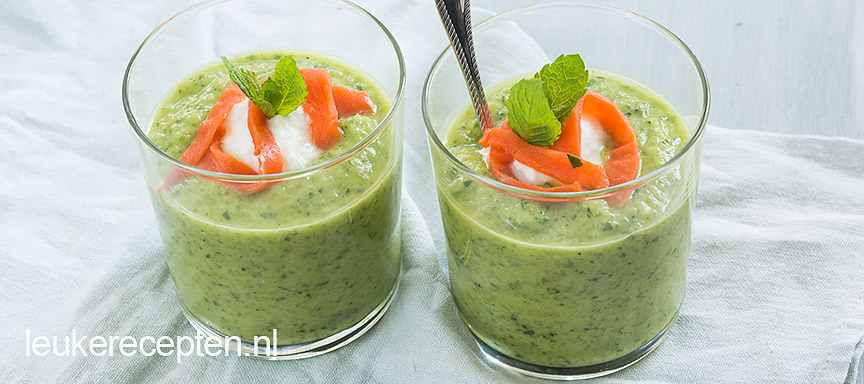

Frisse Komkommersoep met avocado
Deze frisse koude komkommersoep wordt lekker romig van smaak door de avocado, heerlijk tijdens zomerse temperaturen.
Ingrediënten
- 1,5 komkommer
- 1 avocado
- 50 gr gerookte zalm
- 5 gr munt
- 2 eetlepels olijfolie
- 4 theelepels yoghurt
- peper & zout
- 1 teentje knoflook
Bereidingswijze
- Snijd de komkommers in grove plakken en de avocado in plakken.
- Doe dit in de keukenmachine of blender en voeg ook munt, peper, zout en het teentje knoflook toe. Bewaar een paar mooie blaadjes munt voor de garnering.
- Meng tot een grove massa en voeg beetje bij beetje de 2 eetlepels olijfolie toe.
- Snijd de zalm in reepjes. Serveer de komkommersoep in 4 glaasjes en voeg in elk glaasje een theelepel yoghurt toe en wat gerookte zalm. Maak af met de overgebleven blaadjes munt.

Bekijk hier ook andere Recepten:
Hoofdgerecht - Gehaktbrood
Nagerecht - 3 kleuren ijscake